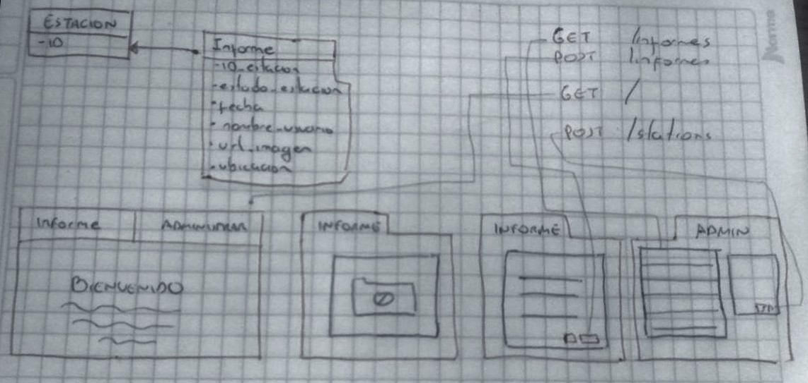

REQUISITOS QR-TRASH-STATION
Problema:
Se desea recibir retroalimentación de los usuario, respecto a las estaciones donde están los contenedores de aseo ubicados por el EMAB.
Requisitos:
- Aplicación Web Responsive
- Al sistema se accede por medio del codigo QR ubicado en las estaciones.
- El sistema captura el identificador de la estación por medio del código QR y la posición GPS del dispositivo (en caso de que el dispositvo lo permita).
- Al acceder al sistema se despliega un formulario con atributos defindos como: el estado de la estación, si está rebosado o no, observaciones y la capacidad de adjuntar fotografías.
- El formulario debe tener atributos opcionales de información del usuario para respuesta (Nombre y correo del usuario)
- La información alfanumerica y de localización debe almacenarce en una base de datos SQL Server.
Diseños
